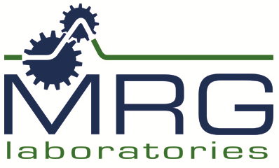
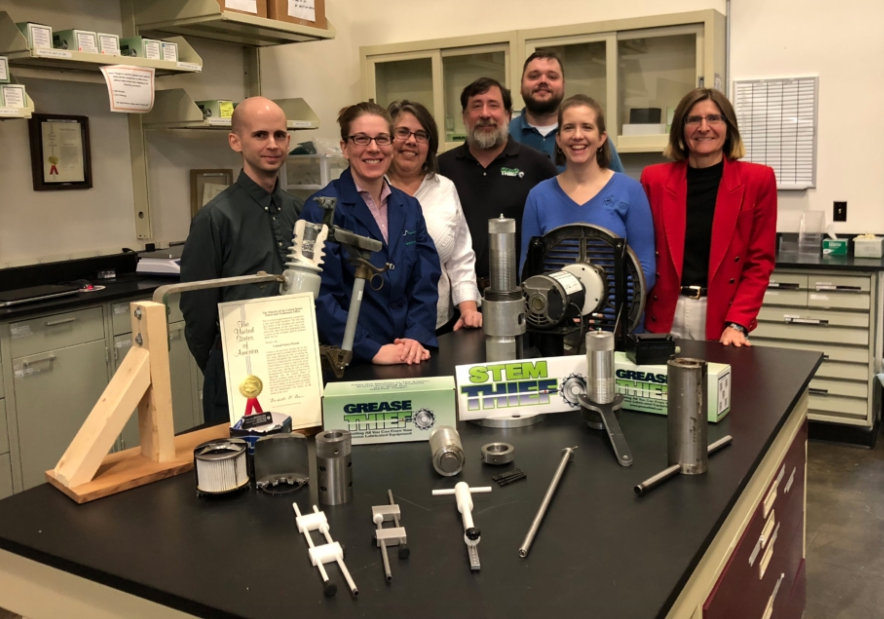

The MRG Labs team are experts in the development of grease sampling tools and analysis, reliability training classes, and the development of predictive maintenance programs for industrial equipment. These
programs and technologies have enabled their partners to more accurately locate, predict and prevent mechanical problems, saving both time and money for their companies.
